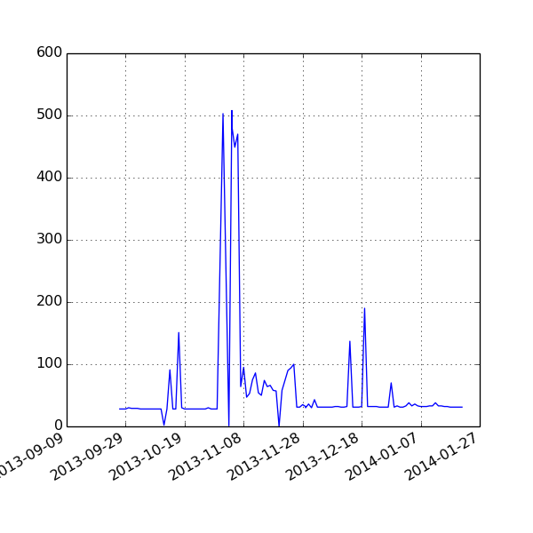

Toggle navigation
IATI Dashboard
Publishers
Files
Download Errors
XML Errors
Validation
Versions
Licenses
Organisation XML
Elements
Codelists
Booleans
GitHub
Download Errors
33
Files that fail to download

Publisher
Registry Dataset
URL
Error Code
dfid
dfid-null
NULL
8
international-alert
international-alert-org
alert-international-activities.xml
8
maec
maec-2012_zw
MAEC_IATI_2012_ZIMBABWE.XML
8
unitedstates
unitedstates-cd
Congo, Democratic Republic of.xml
8
unitedstates
unitedstates-ci
Cote d'Ivoire.xml
8
unitedstates
unitedstates-usaid_administrative_costs
USAID Administrative Costs.xml
8
unitedstates
unitedstates-usaid_africa_regional
USAID Africa Regional.xml
8
unitedstates
unitedstates-usaid_asia_middle_east_regional
Asia Middle East Regional.xml
8
unitedstates
unitedstates-usaid_bureau_for_management
Bureau for Management (USAID).xml
8
unitedstates
unitedstates-usaid_bureau_for_policy_planning_and_learning
Bureau for Policy, Planning and Learning (USAID).xml
8
unitedstates
unitedstates-usaid_caribbean_regional
USAID Caribbean Regional.xml
8
unitedstates
unitedstates-usaid_central_africa_regional
USAID Central Africa Regional.xml
8
unitedstates
unitedstates-usaid_central_america_regional
USAID Central America Regional.xml
8
unitedstates
unitedstates-usaid_central_asia_regional
USAID Central Asia Regional.xml
8
unitedstates
unitedstates-usaid_democracy_conflict_and_humanitarian_assistance
USAID Democracy, Conflict and Humanitarian Assistance.xml
8
unitedstates
unitedstates-usaid_east_africa_regional
USAID East Africa Regional.xml
8
unitedstates
unitedstates-usaid_economic_growth_education_and_environment
USAID Economic Growth, Education and Environment.xml
8
unitedstates
unitedstates-usaid_food_security
Food Security (USAID).xml
8
unitedstates
unitedstates-usaid_global_health
USAID Global Health.xml
8
unitedstates
unitedstates-usaid_joint_eurasia_regional
Joint Eurasia Regional.xml
8
unitedstates
unitedstates-usaid_latin_america_and_caribbean_regional
USAID Latin America and Caribbean Regional.xml
8
unitedstates
unitedstates-usaid_legislative_and_public_affairs
USAID Legislative and Public Affairs (LPA).xml
8
unitedstates
unitedstates-usaid_middle_east_regional
USAID Middle East Regional.xml
8
unitedstates
unitedstates-usaid_office_of_development_partners
USAID Office of Development Partners.xml
8
unitedstates
unitedstates-usaid_office_of_innovation_and_development_alliances
Office of Innovation and Development Alliances (USAID).xml
8
unitedstates
unitedstates-usaid_operating_expense
USAID Operating Expense.xml
8
unitedstates
unitedstates-usaid_pacific
USAID Pacific.xml
8
unitedstates
unitedstates-usaid_regional_development_mission_asia
USAID Regional Development Mission-Asia.xml
8
unitedstates
unitedstates-usaid_south_america_regional
USAID South America Regional.xml
8
unitedstates
unitedstates-usaid_southern_africa_regional
USAID Southern Africa Regional.xml
8
unitedstates
unitedstates-usaid_west_africa_regional
USAID West Africa Regional.xml
8
unops
unops-kp
iati_activity_KP.xml
8
unops
unops-nu
iati_activity_NU.xml
8